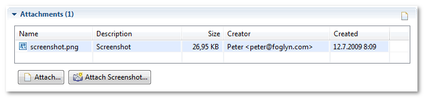
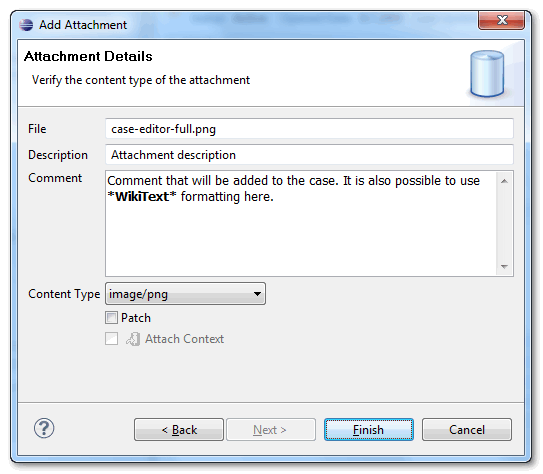

Case Editor: Attachments
Attachments section displays list of files attached to the case, and allows you to attach another file or screenshot. Attachments can be saved or opened in default program from context-menu. It is also possible to select multiple attachments and save all attachments at once. Double-clicking the attachment will open the attachment in the browser (this may not work, depending on whether browser was used to access FogBugz repository before).

Description column in Attachments table is used only when attaching files from case editor. Files attached via FogBugz web interface have no description.
Creator column says who uploaded this attachment. If file was attached to email, email sender will be the creator of attachment.
When attaching new file to FogBugz case using Attach or Attach Screenshot buttons, file is attached immediately. To enter
comment together with new attachment, you need to fill comment part in Add Attachment wizard.
